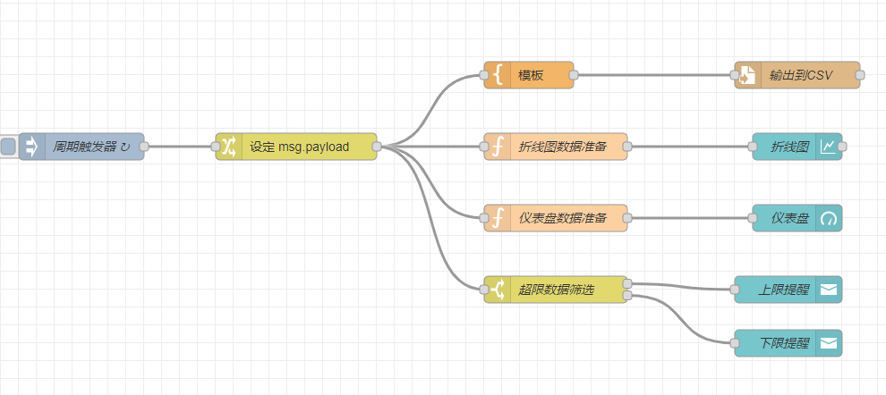
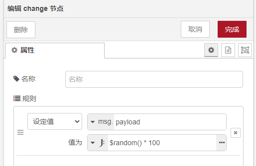
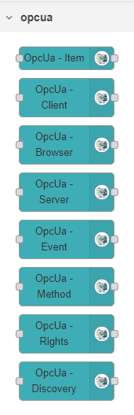
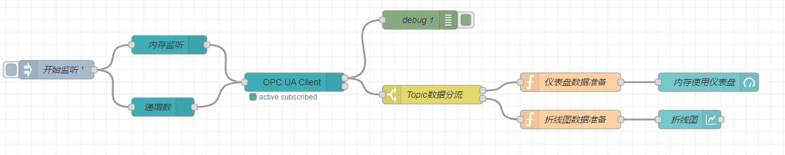
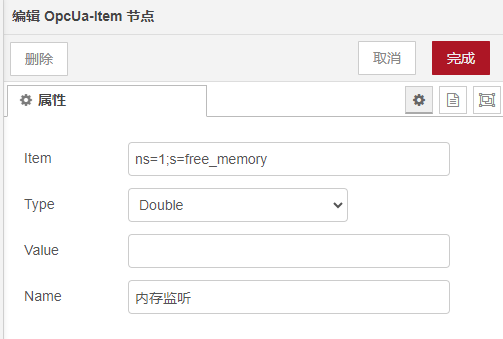
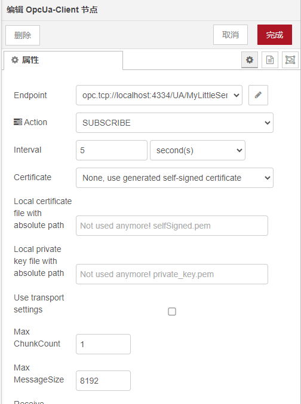
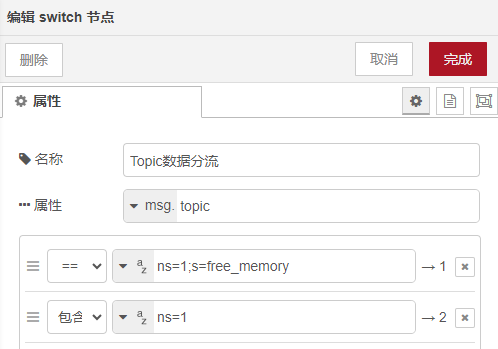
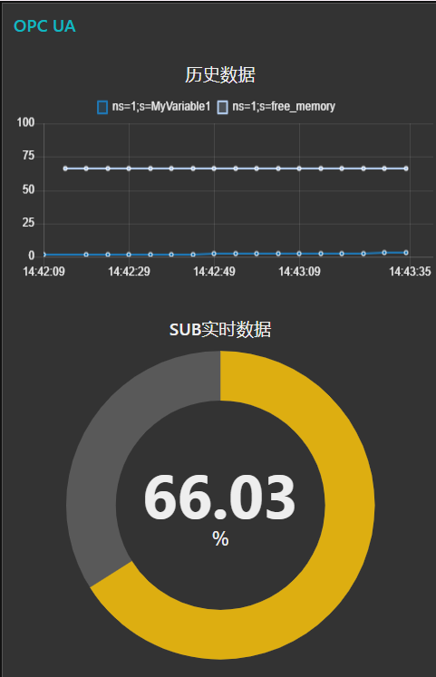

初识Node-Red
Node-Red 是一个基于流程的编程工具，通过可视化编辑的方式帮助用户生成事件驱动的应用。其核心思想是连接，通过将IOT设备、API和在线服务连接，形成数据流程从而产生价值。
Node-Red名字中的Node包含两层含义，第一层指代流程中的节点，所有的IOT设备、API和在线服务都以Node的形式存在；第二层指代实现方式，Node-Red基于Nodejs构建，这也为它带来了事件驱动和非阻塞的特性。
快速开始
我们可以从github 获取最新版本的源代码，从源代码开始构建确保可以使用最新的特性。
1 | |
启动完成后，访问 http://localhost:1880 即可进入管理页面。

可以看到左边面板是已安装的节点，中间是编辑区，右边是功能区。
通过将左边面板的节点拖拽到编辑区，并进行连线即可形成流程。在节点上双击可以编辑节点内容。编辑完成后通过点击右上角的部署按钮完成流程部署运行。
一个简单的流程
以上图中折线图流程为例，我们通过引入四个节点完成了流程的构建：
周期触发器，通过Inject Node实现每隔10s生成一个事件
设定payload，通过一个Change Node给msg中的payload属性赋一个随机值
折线图数据准备，使用Function Node通过js准备折线图需要的数据
1
2
3
4
5
6let result = {
'topic': 'random',
'payload': msg.payload,
'timestamp' : msg.timestamp
}
return result;折线图，最后来到Chart Node，选择折线图的展现形式
流程部署后，通过访问Dashboard http://localhost:1880/ui/ ，得到了如下的折线图

OPC-UA数据流程
接下来我们更进一步，使用实际工作中涉及的OPC-UA协议进行数据采集验证。
UA服务器搭建
我们可以基于开源项目node-opcua 搭建OPC-UA服务器。
首先安装node-opcua包
1 | |
然后编写sample_server.js，参考文档 https://github.com/node-opcua/node-opcua/blob/master/documentation/creating_a_server.md 并根据自己的需求进行改写。
最后通过 node sample_server.js 启动一个UA服务器。
UA的节点安装
在管理页面通过节点管理菜单进入后，搜索opcua，选择 node-red-contrib-opcua，点击安装即可完成节点安装。安装完成后在左侧的已安装模块会出现opcua的相关节点，
UA流程构建
UA流程使用如下节点共同构建UA数据采集流程：
开始监听，通过Inject Node开始流程
内存监听，配置OpcUa-Item Node将需要监听的节点ID和数据类型通过消息传递给UA Client
OPC UA Client，通过OpcUa-Client Node配置UA服务器地址、交互方式（action）和交互频率
Topic数据分流，一个Switch Node将Client输出的数据进行分流，支持多种匹配方式，案例中使用topic完全匹配的方式来将不同的监听项分发到不同的分支。根据定义的分支数量，节点会生成相应数量的输出端点，将端点连接到子流程即可
debug节点，通过配置Debug节点可以在调试窗口查看节点的输出
仪表盘数据准备，一个用于准备数据的Function Node
内存使用仪表盘，一个使用仪表盘形式的Chart Node
流程部署后，访问Dashboard，得到如下展示：
不是结束的结束
我们通过两个流程的实战，对于Node-Red进行了初步的了解，同时验证了Node-Red作为IOT数据采集工具的功能可用性。
但是如果要作为一个生产可用的软件，我们还需要考虑得更多。
- 如果需要在车间的不同硬件上部署多个实例，如何实现批量部署、批量管理和状态监控？
- 如何通过性能测试界定软件在不同协议下工作的性能边界？
- 如何通过软件工程来确保软件的可靠性？
Node-Red的征程才刚刚开始，后续会通过源码学习和专题研究的方式向产品化的目标前进。